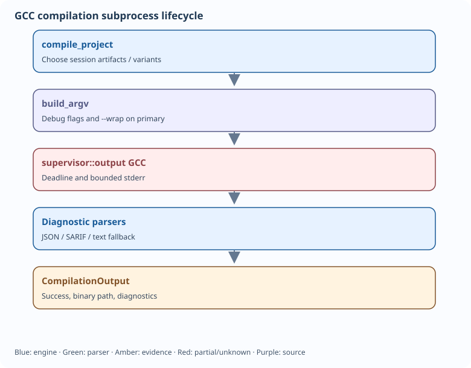
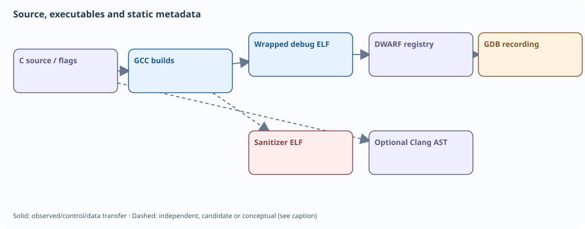

23 · Compiler invocation and diagnostic evidence #
Key terms #
| Term | Meaning |
|---|---|
| Argv | The exact list of arguments given to an OS process. Reading it is safer than imagining what shell command ran. |
| Diagnostic fallback | If GCC can't produce one structured warning format, the engine tries another supported one instead of silently losing errors. |
>
The big picture #
The engine builds an instrumented debug executable before any debugger run, then attempts a separate sanitized executable.
- Compilation success is a prerequisite for runtime evidence.
- Sanitizer build success is not proof that a sanitizer later found or reproduced a defect.
The request is assembled in entry/configuration, and subprocesses are owned by supervision.
Step 1 · Options and tool probes (src/compiler.rs) #
CompileOptions holds { sanitized, sanitizer_variant, include_alloc_tracker, tracker_source, output_path }, with three constructors (src/compiler.rs:28-73):
| Constructor | Use |
|---|---|
debug(output_path, tracker_source) | The debug build |
sanitized(output_path) | A sanitizer build |
sanitized_with_variant(output_path, variant) | A specific sanitizer variant |
CompilationOutput retains: success, native exit code, binary path, parsed diagnostics, raw stderr, the selected format, and an optional sanitizer variant (src/compiler.rs:75-97).
The orchestrator creates the tracker source and passes it to compile_project. The debug build wraps malloc/calloc/realloc/free; sanitized builds omit the tracker (src/trace.rs:226-237; src/compiler.rs:543-566).
Probing tools #
| Function | Location | Behavior |
|---|---|---|
probe_tool(tool, version_arg) -> Result<String> | src/compiler.rs:99-128 | Requires a successful status; returns the first stdout line; turns most spawn/probe failures into MissingTool, preserving cancellation |
detect_diagnostics_format(cc) -> DiagnosticsFormat | src/compiler.rs:130-158 | Tries -fdiagnostics-format=json, then sarif-stderr, then falls back to Text |
Both launch processes through supervisor::output with a three-second stage deadline and 1 MiB per-pipe capture.
Format detection tests candidate commands and recognizes an unsupported-argument message, rather than comparing a hard-coded GCC version. A probe that returns output without that message can still select the attempted format, because the later parse has a text fallback.
compile_project itself probes gcc --version. trace_program_inner also probes required GCC and GDB before creating the session directory (src/compiler.rs:535-537; src/trace.rs:203-229).
Step 2 · Assembling the exact argv #
Signature: fn build_argv(build: &BuildConfig, opts: &CompileOptions, diag_flag: Option<&str>) -> Vec<String> (src/compiler.rs:392-452).
Every argument is passed individually to tokio::process::Command, never interpolated into a shell. The order matters:
gcc -g -O0 -fno-omit-frame-pointer [-fsanitize=address,undefined]
[-fdiagnostics-format=json | -fdiagnostics-format=sarif-stderr]
[-Wl,--wrap=malloc -Wl,--wrap=calloc -Wl,--wrap=realloc -Wl,--wrap=free]
[-D...] [-I...] [compiler_flags...]
source_file [additional_sources...] [tracker_source] [object_files...]
[-L...] [linker_flags...] [-l...] -o output_pathBrackets mark conditional or vector segments, not literal shell syntax.
| Fact | Detail |
|---|---|
| Sanitizer vs wrapper | Mutually exclusive in the standard constructors |
| User compiler flags | Come after -g -O0 -fno-omit-frame-pointer, so they can override defaults |
| Linking options | Come after the inputs (src/compiler.rs:396-450) |
program_args | Absent, since they're for the inferior |
| Working directory | compile sets current_dir only when build.working_directory is present (src/compiler.rs:471-475) |
| Validation | Only checks the primary source path is nonempty; GCC handles unresolved extra inputs and linkage |
| Output paths | Debug: <session_dir>/<output_name or program>_debug; sanitized: _asan (src/compiler.rs:539-565) |
Step 3 · Running GCC and handling failures #
Signature: pub async fn compile(build, cc, opts, format) -> Result<CompilationOutput> (src/compiler.rs:454-527).
It runs the command via supervisor::output(&mut cmd, supervisor::deadline(), 8 * 1024 * 1024).
| Situation | Result |
|---|---|
| Timeout or cancellation | An engine error, not a fabricated GCC diagnostic |
| Nonzero GCC status | Normally Ok(CompilationOutput { success: false, ... }); exit code -1 if no numeric code exists |
| Success | Requires both a successful process status and no parsed error, linker-error or fatal error diagnostics (src/compiler.rs:478-526) |
| Output beyond the capture cap | The output carries output_truncated, but compile does not propagate that flag into CompilationOutput. So diagnostics or stderr beyond the cap can't be claimed complete |
trace_program_inner separately clamps the whole build future to compiler_timeout_seconds within the global deadline (src/trace.rs:230-238). Process cleanup can briefly outlast a deadline.
Step 4 · The sanitizer fallback builds #
let debug_result = compile(build, "gcc", &debug_opts, format).await?;
if !debug_result.success {
return Ok((debug_result, not_built()));
}
for variant in ["address,undefined", "address", "undefined"] {
let opts = CompileOptions::sanitized_with_variant(asan_out.clone(), variant);
let result = compile(build, "gcc", &opts, format).await;
// Schematic: actual loop breaks on a successful variant or an engine error.
}This follows pub async fn compile_project(build, session_dir, tracker_source) -> Result<(CompilationOutput, CompilationOutput)> (src/compiler.rs:529-581).
| Behavior | Detail |
|---|---|
| Variant order | Combined ASan/UBSan, then ASan-only, then UBSan-only |
| A failed variant's output | Does not become the returned sanitizer result |
| If none succeeds | The returned sentinel is not_built() (with an error string in raw_stderr only when a compile call returned Err) |
| Debug build vs sanitizer failure | The successful debug build is retained even if optional sanitizer compilation fails |
| If the debug build failed | trace_program_inner records its diagnostics and stops without snapshots (src/trace.rs:291-350); optional sanitizer unavailability is marked separately |
Sanitizer runs, when triggered, are separate executions, not observations of the GDB process. See diagnostics.
Step 5 · Normalizing diagnostic formats #
| Parser | Location | Handles |
|---|---|---|
parse_legacy_gcc_json(stderr) | src/compiler.rs:232-259 | Legacy GCC JSON: first location/caret, flattens child notes |
parse_sarif(stderr) | src/compiler.rs:317-366 | SARIF: first physical location, maps camel-case region fields |
text_diagnostics(stderr) | src/compiler.rs:368-390 | Plain-text fallback |
Rules shared by all three:
- Legacy JSON and SARIF each support consecutive documents from multiple translation units.
- A missing location becomes
<unknown>/zero, never a guessed source position. - If structured parsing fails, it falls back to a single text diagnostic (up to 4,000 characters). Known linker phrases map to
linker-error; any other nonempty stderr maps toerror. - The normalized payload is
CompilerDiagnostic { file, line, column, kind, message }(src/models.rs:50-59).
Tests: gcc_legacy_caret_locations_and_streams_are_preserved and gcc_sarif_stream_and_camel_case_region (src/compiler.rs:595-611). The final audit independently confirms a live compilation failure produced diagnostics without debugger events.
Diagram notes #
| Diagram | What it shows |
|---|---|
| Compilation lifecycle  | GCC invocation, bounded output capture, diagnostic normalization and optional sanitizer variants. |
| Build artifacts  | The wrapped debug executable is the only binary GDB executes; sanitizer artifacts and Clang syntax are separate. |